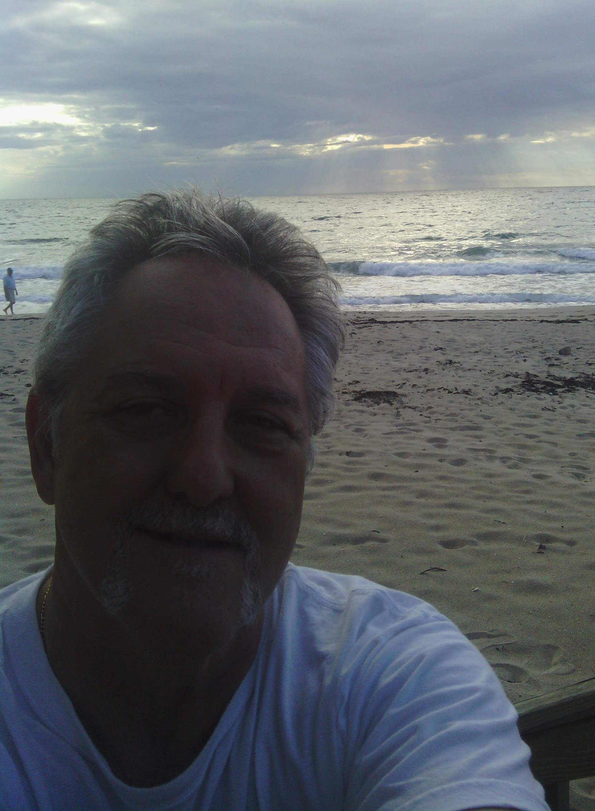
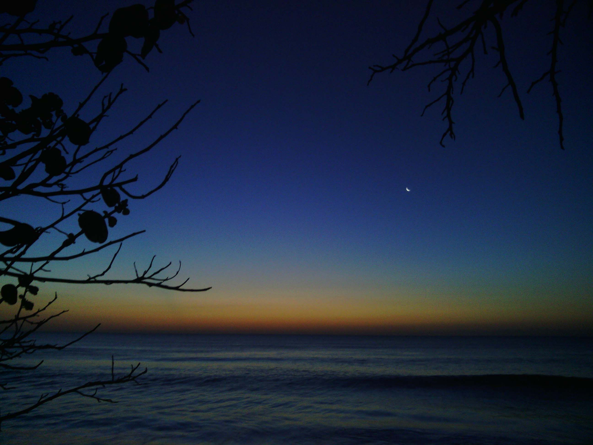

created by Jose Forcade


This web page was created in a
spur of the moment inspiration....
In addition to programming in VB.NET,
I ride a Specialized roadbike,
take photographs,
travel and write for fun.
Having degreed in Psychology back when, and...
spent years of working in IT for cruise lines,
manufacturing and construction companies,
I'm following the Software Engineering concentration at
Harvard's Extension University ALM Program and
love to learn and understand new ideas and constructs
especially leading to the design and use of computers.
This page was created in Sublime Text 2 and also edited in Notepad++
::
September 15 2013